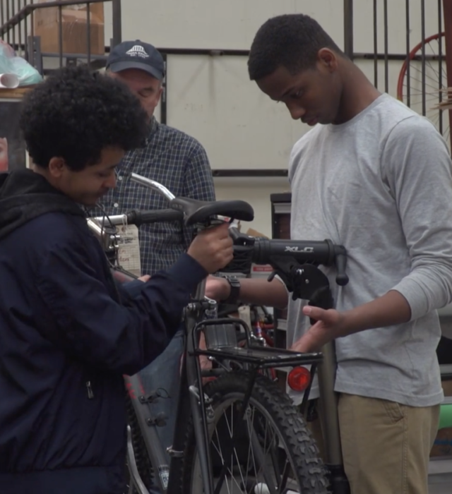

NACTO x BBSP Bike Share & Cities for Cycling Virtual Roundtable: The Community Videos You Must See
by Farrah Daniel, Better Bike Share Partnership Writer
August 6, 2020

Cascade Bicycle Club
BBSP and the National Association of City Transportation Officials (NACTO) held our first-ever virtual conference this year — NACTO | BBSP Bike Share & Cities for Cycling Roundtable.
Between workshops and sessions sharing pertinent information about the landscape of micromobility, the roundtable also welcomed community videos that highlight the diverse ways communities define, experience and use bikes and streets.
While some of them were shown during the event’s coffee breaks, quite a few have been unseen until now. We’re so excited to share them with you!
Keep reading to learn more about each community group below and how they’re making big strides with bicycling advocacy and education to better their streets and communities.
Mattapan Food and Fitness Coalition
 Mattapan Food and Fitness Coalition
Mattapan Food and Fitness Coalition
The Mattapan Food and Fitness Coalition (MFFC) is a grassroots movement and collaborative organization in the Mattapan neighborhood of Boston. It was created to provide healthy and affordable food as well as safe recreational spaces for residents of all ages.
Made up of a group of African American/Caribbean women with a range of expertise across nonprofit management and nutrition and youth development, MFFC grew out of an effort to draw on the rich ethnic and cultural diversity of the Mattapan community to promote a healthy living environment.
Together, they unite the Mattapan residents, advocates and organizations to improve the food and physical activity environments in the neighborhood and surrounding communities.
In 2017, the Boston Public Health Commission’s annual report stated that Mattapan has one of the highest rates of obesity, diabetes and hypertension. On top of that, Mattapan has one single grocery store addressed with a Mattapan zip code that serves all 39,000 residents — the organic food it does sell is overpriced; meanwhile, the community has 27 fast-food restaurants.
To champion its community, MFFC stays busy year-round bringing Mattapan residents awareness to the health and wellness resources available to them through the organization’s focus areas:
One initiative at a time, MFFC chips away at its vision, where Mattapan’s streets are clean, walk- and bikable, and the neighborhood is one of the healthiest communities in Boston with easy access to affordable and healthy food options.
2020 Bike Roundtable Community Video: Meet Jaheim Dwyer, an MFFC Vigorous Youth, and see Mattapan and Boston through his eyes!
BYKE Collective
 BYKE Collective
BYKE Collective
When Chavi Rhodes noticed a need for a positive youth-centered bicycle program in Baltimore, she decided to create Baltimore Youth Kinetic Energy Collective (BYKE) by leveraging community partners and uplifting bike culture.
It focuses on youth workforce development, mentorship and violence prevention for youth from underserved and disinvested communities in Baltimore.
Open to youth ages 10 to 24, BYKE is an after-school drop-in enrichment program that helps young people develop personal and professional skills through learning bicycle mechanics, practicing safe ridership and building community.
Plus, after a change of leadership to Jasper Barnes as the new Executive Director in 2019, BYKE is now the only black-led, youth-centered bike shop in Baltimore.
Since its launch in 2014, BYKE has become a place where youth can gain a vast array of skills and contribute to the community the BYKE team has cultivated within their shop.
And if they learn how to fix bicycles for others, Baltimore youth can also earn parts they need or entire bicycles with BYKE’s credit system, where credit is earned by positively contributing to the BYKE community (i.e., helping others, working on shop projects, learning new skills).
BYKE encourages ownership, accountability and appreciation — here’s how else the program works to empower its young members:
- Repairing Bikes: BYKE provides a safe space for young people to maintain and repair their bicycles with staff and volunteers on-hand to solve bike-related issues, ensuring everyone has access to safe and reliable transportation.
- Building Community: Each shop day ends with a youth-facilitated meeting to reflect on goals, frustrations and accomplishments, and discuss issues young people face inside and outside the shop. Meetings end with thank yous and words of affirmation.
- Workforce Development: Youth residents who are 14 to 24 with an interest in developing their bike mechanic and leadership skills are welcomed to apply for BYKE’s summer internship, where interns learn advanced bike mechanic skills, conflict mediation and goal-setting.
- Group Rides: Youth-led group rides around the city provide an opportunity to practice safe ridership in traffic and get to know new areas in Baltimore.
To help BYKE continue to provide free bike repair services to its community, donations are always welcomed.
2020 Bike Roundtable Community Video: “I wanted to show people in my community rid[ing our] bikes every day and show that people my age ride bikes just as much if not more than [other] people. We just ride in our own way,” says Montaze Johnson, the video creator and a Golden Fleet Intern and BYKE youth member since 2017. Check out the neat ways these Baltimore youth enjoy riding!
Rooted in Rights
 Rooted in Rights
Rooted in Rights
A project of Disability Rights Washington, Rooted in Rights is a disability advocacy group that tells “authentic accessible stories to challenge stigma and redefine narratives around disability, mental health, and chronic illness.”
Within its Storytellers program and workshops program, Rooted In Rights trains disabled people new to video advocacy about how to use video storytelling to seek progress and influence change. Additionally, the group works with disabled writers to edit and publish their stories on the Rooted in Rights blog. Through digital organizing, Rooted In Rights builds community and expands the messages of disabled storytellers who challenge stigmas and advocate for change.
Plus, the disability advocacy group’s Seattle-based team of disabled video producers, editors, and digital organizers work alongside both local coalitions and national advocacy campaigns to fight for tangible changes for the disability community.
To reflect the motto of the disability community — “nothing about us without us” — Rooted In RIghts believes that disabled people should be the ones writing, producing, shooting, and editing their own stories.
And that’s exactly what you’ll see in the many resources available on the website, where numerous perspectives of disability are shared and key issues are amplified.
2020 Bike Roundtable Community Video: Watch this video to learn the diverse ways the disabled community defines, experiences and uses bikes and streets.
Cascade Bicycle Club
 Cascade Bicycle Club
Cascade Bicycle Club
In Seattle, the Cascade Bicycle Club (CBC) aims to focus on five important goals:
- Share the joy of bicycling
- Create exceptional opportunities to ride
- Teach everyone to ride safely
- Bring people together through bicycling
- Transform the state through bicycling
Today, the volunteer-led club has grown to become the nation’s largest statewide bicycle nonprofit.
Since its humble beginnings in 1970, CBC has served bike riders of all ages and abilities throughout the state of Washington, working to improve lives through rides and events, programs, education opportunities, youth development programs, advocacy and activism.
CBC’s Community Organizer Tamar Shuhendler says:
“The COVID-19 crisis and Black Lives Matter protests exacerbated and highlighted inequalities across the US. They also brought with them a real reckoning of Cascade’s place in the community and how we better meet the needs of the biking and [the] broader community. No aspect of our work is untouched, and we’ve had to adapt across the board, from canceling our Major Rides season to transitioning educational programming and advocacy training to online.
It’s been incredibly rewarding to create programs like our Food Bank Bike Delivery program to connect volunteers with opportunities to support their neighbors during the pandemic, as well as transitioning our advocacy leadership training to a virtual setting. This time has also pushed us to acknowledge that our conception of safe streets cannot just begin and end with the bike lane, and we’ve been working to better represent and serve the entire biking community of Washington.
This year is Cascade’s 50th anniversary. It’s not the 50th we expected, but it’s a year that has challenged us to keep adapting, growing, and developing our programming to respond to the needs of those most vulnerable in our communities — and we look forward to a time where we can all ride, learn, and advocate together again.”
2020 Bike Roundtable Community Video: Hear many personal reflections from the Cascade community about how the bicycle advocacy nonprofit has positively affected lives in and outside of Seattle.
Phoenix Bikes
 Phoenix Bikes
Phoenix Bikes
The mission of Phoenix Bikes is simple: educate the youth, promote bicycling and build community. With two primary operations — one as a youth education program and the other as a community bike shop — this community organization provides a number of resources to both youth and adults in an effort to grow young leaders and healthy communities.
Phoenix Bikes’ Earn-A-Bike programs, for instance, teaches middle and high school students how to fix bikes and serve the DC Metro community. And through the community bike shops, adults can also learn the art of bike mechanics.
Stop by to get your bike fixed, buy a recycled bicycle, or pop in to take advantage of its learning opportunities — all are welcome at Phoenix Bikes in Arlington, VA.
In regards to the community video shared below, Maggie Richardson, Development and Communications Assistant at Phoenix Bikes, says:
“Making this video has been a great way for us to distill everything that’s been going on during this crazy time. Our bike shop has become the center of so many issues from transportation justice to sustainability in a way I really didn’t expect. Natalie [Slater, Program Assistant at Phoenix Bikes] and I really wanted to capture the way that all these different aspects of life during the pandemic intersect with cycling and just give depth to our present moment.”
2020 Bike Roundtable Community Video: Since the COVID-19 pandemic, fewer people are commuting in cars and there’s been an influx of new riders — watch to see how Phoenix Bikes has met the needs of their community in new ways.
Black Women Bike

Black Women Bike
“Our vision is that Black women and girls of all ages ride their bikes for fun, health, wellness and transportation. The mission of Black Women Bike is to build community and interest in biking among black women through education, advocacy and recreation,” says the Facebook page for Black Women Bike.
In Maryland’s Central and Southern Prince George’s County, cyclists have to adapt to infrastructure that doesn’t serve them. Without sufficient bike lanes, places to lock up bikes, very few bike share dock stations, neighborhood bikeways, marked shared lanes or barrier-protected lanes, Prince George’s residents are left with limited protections and options for safe commuting.
If you identify as a woman, you’re welcome to join this group that wants to change the way women ride in Washington DC, Maryland, Virginia and beyond. And if you live in the DC area, join Black Women Bike for monthly group rides hosted on the third Saturday of each month from April to November! These social rides are no-drop and beginner-friendly, and the only requirement is that you wear a helmet — safety first, always.
2020 Bike Roundtable Community Video: Interested in learning more about the challenges of biking in underserved suburban areas? Now’s your chance to! Black Women Bike’s community video focuses on Maryland’s Central and Southern Prince George’s County.
The Brown Bike Girl
 The Brown Bike Girl
The Brown Bike Girl
Have you ever heard of Bike advocacy consulting? If not, meet Courtney Williams AKA The Brown Bike Girl. She may live in New York, but this powerhouse wants to help everyone.
To enable more people to cycle and promote a culture of cycling, Williams partners with local government, nonprofits and advocacy organizations in order to expand bicycling access and adoption within communities of color as well as bicycling education for all.
Launched in 2016 with the goal of assisting communities in knocking down the barriers between communities of color and their access to bicycling, The Brown Bike Girl combines social interest programming and cycling by:
- Organizing cycling opportunities that encourage marginalized people of color to ride together and join the bike community.
- Participating in and moderating panels about racial equity issues in cycling and her own cycling advocacy work.
- Empowering neighbors from traditionally Black and brown neighborhoods to become skilled group ride facilitators and create more ride opportunities within their neighborhoods.
- Providing organizational anti-bias and anti-privilege training.
Williams is passionate about “sharing the solutions that embracing bicycles can provide to the challenges faced by inner-city Black and Brown populations.”
2020 Bike Roundtable Community Video: How can Black and Brown women tackle the issue of fitting unique styles in helmets that are necessary but not inclusive of diverse hair? The Brown Bike Girl demonstrates just how to fit various styles in an array of helmets.
Neighborhood Bike Works
 Neighborhood Bike Works
Neighborhood Bike Works
In Philadelphia, PA, Neighborhood Bike Works (NBW) is doing everything they can to inspire youth and strengthen Philadelphia’s communities by providing equitable access to bicycling and bike repair through education, recreation, leadership and career-building opportunities.
NBW teaches its youth to fix bikes, gives them chances to earn bikes as well as explore new places by bike. To further support their youth, NBW runs a Youth Council program, which serves to build youth leadership and youth voice in the NBW community.
The Council plays a significant role: Members offer ideas on new NBW programs and events to staff and other leaders in our community; when NBW makes critical organizational decisions, NBW staff and Board sometimes consult with the Youth Council to understand a youth perspective and gather additional input; and council members facilitate connection and communication between staff and youth program participants.
Eighty percent of the youth NBW serves are people of color and live in low-income neighborhoods. The community group plans to serve 400% more youth in 2022 with a 25% increase in revenue.
2020 Bike Roundtable Community Video: Neighborhood Bike Works didn’t let COVID-19 stop them from serving their riders. Instead, they pivoted their strategy to meet the new needs of their neighborhood! Check out the details in this video.
Bike & Brunch Tours
 Bike and Brunch Tours
Bike and Brunch Tours
There are plenty of creative ways to engage your community, and Bike and Brunch Tours has done so by pairing history, culture and legacy with two things everyone loves — bikes and brunch.
On weekdays and weekends, local Bike and Brunch Tours guides lead people through the culturally-rich neighborhoods of Baltimore, Charlotte and Richmond on bicycles. Other services include pop-up rides in other cities, private tours, community events and consulting to support the community engagement and equity-building needs of organizations.
Anyone interested to learn more about the history and culture of historically Black communities and see public art connected to them is welcome to join. Bike and Brunch Tours plans “fun, informative, and eye-opening rides that serve as a beacon to the culture, history, and legacy that lie at the city’s core.”
Check out their website and social media to see how to join the next one!
2020 Bike Roundtable Community Video: Ride with Bike and Brunch Tours through the neighborhoods they tour! Watch these videos to see them and community residents share a taste of the city while they work to change the narrative one ride at a time.
— — — — — — —
Thank you for watching these inspiring videos!
The Better Bike Share Partnership is a JPB Foundation-funded collaboration between the City of Philadelphia, the Bicycle Coalition of Greater Philadelphia, the National Association of City Transportation Officials (NACTO) and the PeopleForBikes Foundation to build equitable and replicable bike share systems. Follow us on Facebook, Twitter and Instagram or sign up for our weekly newsletter. Story tip? Write farrah@peopleforbikes.org